Example of Caenorhabditis elegans Dataset¶
In this tutorial, we demonstrate how to use LineageGRN on a Caenorhabditis elegans (C.elegans) dataset. This dataset comprises:
Cell lineage information: A well-established developmental lineage map for C. elegans.
scRNA-seq data: Single-cell transcriptomic profiles capturing the expression of genes across developmental stages.
scATAC-seq data: Chromatin accessibility profiles providing complementary information on regulatory region activity.
From the combined single-cell transcriptomic and chromatin accessibility measurements, we identified:
244 regulatory genes
339 target genes
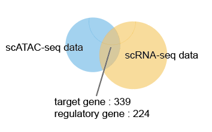
We denote this dataset as full dataset, which allows us to perform a comprehensive or “global” gene regulatory network (GRN) inference. By using the full set of regulatory genes and target genes, we can:
Capture the broad regulatory relationships across the developmental landscape of C. elegans.
Thoroughly evaluate the performance of LineageGRN.
After establishing the overall framework and validating the algorithm on the full dataset, we select a subset of:
34 regulatory genes
41 target genes
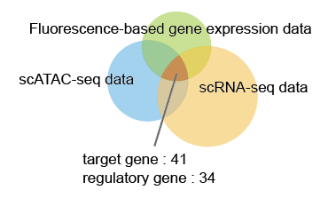
By narrowing the scope to these core regulators, we can more easily:
Track reconfiguration patterns of regulatory networks along the cell fate map.
Identify key drivers of cell differentiation.
Identify key drivers of cell fate bias.
Investigate both specific and constitutive regulatory interactions among the most influential genes.
This comprehensive-to-focused strategy first confirms LineageGRN’s effectiveness across the broad regulatory landscape, then leverages a smaller, targeted subset to deepen insights into how key regulatory factors orchestrate cellular transitions and lineage decisions—ultimately enhancing both the robustness and interpretability of our findings.
Data Acquisition¶
Time-Scaled Cell Fate Map¶
Cell lineage tree capturing the cell division dynamics throughout C.elegans development.
scRNA-seq Data¶
Raw scRNA-seq data providing gene expression profiles across diverse C.elegans cell types.
Fluorescence-Based Gene Expression Data¶
Fluorescence-based gene expression data obtained through time-resolved microscopic imaging, enabling precise quantification of gene expression dynamics at single-cell resolution in C.elegans.
scATAC-seq Data¶
Raw scATAC-seq data providing chromatin accessibility profiles across all tissues in C.elegans.
Data Preprocessing¶
Time-scaled Cell Fate Map¶
In this example, we utilize the well-established cell lineage tree of C.elegans. The lineage tree consists of six subtrees, each representing a distinct cell fate map.
Taking the EMS lineage as an example, the topological structure of the cell fate map is provided using the Dict data type. The process involves the following steps:
Load the topology data from a CSV file containing edge information.
Parse the edge dictionary to extract the relationships between cells.
Instantiate the
FateMapobject, which generates the final fate map based on the provided topology.
# Load cell lineage topology data
map_df = pd.read_csv('examples/data/C.elegans/C.elegans_Full/additional_input_data/fate_map_topology.csv')
edges_dict_Celegans = {}
for top_key, group in map_df.groupby("Lineage"):
sub_dict = {f"{row['Parent']}->{row['Child']}": row['Length'] for _, row in group.iterrows()}
edges_dict_Celegans[top_key] = sub_dict
# Process each subtree
# ABpr
edges_ABpr = parse_edge_dict(edges_dict_Celegans['ABpr'])
fate_map_ABpr = FateMap(edges_ABpr)
# ABpl
edges_ABpl = parse_edge_dict(edges_dict_Celegans['ABpl'])
fate_map_ABpl = FateMap(edges_ABpl)
# ABar
edges_ABar = parse_edge_dict(edges_dict_Celegans['ABar'])
fate_map_ABar = FateMap(edges_ABar)
# ABal
edges_ABal = parse_edge_dict(edges_dict_Celegans['ABal'])
fate_map_ABal = FateMap(edges_ABal)
# EMS
edges_EMS = parse_edge_dict(edges_dict_Celegans['EMS'])
fate_map_EMS = FateMap(edges_EMS)
# P2
edges_P2 = parse_edge_dict(edges_dict_Celegans['P2'])
fate_map_P2 = FateMap(edges_P2)
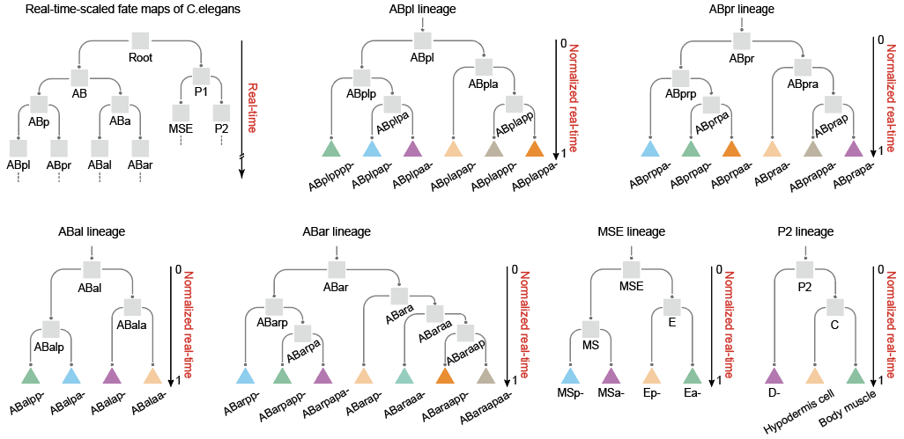
scRNA-seq Data¶
Preprocessing Steps¶
Quality Control:
Remove cells with low gene expression levels or signs of cell death.
Highly Variable Genes (Optional):
Select highly variable genes for further analysis.
Normalization:
Normalize gene expression levels so that each cell’s gene expression has zero mean and unit variance.
References and Tools Used¶
Preprocessed Formats¶
Columns:
Gene Name: Name of the gene (e.g., GENE_A).Cell Name: Unique identifier for each cell.Gene Expression: Normalized gene expression value.Cell Cluster ID/Cell Type: Cluster or cell type label.Gene Type: EitherRegulatory GeneorTarget Gene.
scATAC-seq Data¶
Preprocessing Steps¶
Chromatin Co-accessibility Analysis
Process raw data using the
ciceropackage to identify chromatin fragments (peak1andpeak2) and compute a co-accessibility score.Remove rows with a
co-access scoreless than 0.1.
Peak-to-Gene Mapping
Map
peak2fragments to gene IDs and further to gene names (target genes).
Motif Identification
Perform motif scanning on
peak1regions to identify regulatory genes.
Regulatory Network Construction
Establish links:
One
peak1to multiple regulatory genes.One
peak2to one target gene.The co-accessibility score reflects the shared regulatory relationship strength.
References and Tools Used¶
Preprocessed Formats¶
Columns:
Regulatory Gene: Derived from motif scanning onpeak1.Target Gene: Based on genomic position annotation ofpeak2.Co-access Score: Regulatory relationship strength.Cell Cluster ID/Cell Type: Provides context for the regulatory relationship.
Inference of Gene Regulatory Networks¶
This step inputs the preprocessed data files.
# Define file paths for EMS lineage
atac_file_path = "examples/data/C.elegans/C.elegans_Full/input_data/EMS/atac_data.csv"
expression_file_path = "examples/data/C.elegans/C.elegans_Full/input_data/EMS/expression_data.csv"
This step generates a dataframe for each target gene with the following structure:
Rows: Correspond to cell clusters.
Columns: Correspond to regulatory genes.
Column 1: Target gene name.
Column 2: Cell cluster ID (node in the regulatory network).
Column 3~n: Regulatory relationships between the target gene and its regulators (regulatory strength and mode).
GRN Inference for Different Lineages¶
## setup
target_genes_name=pd.read_csv("examples/data/C.elegans/C.elegans_Full/additional_input_data/target_genes_name.csv").iloc[:,1].to_list()
regulatory_genes_name=pd.read_csv("examples/data/C.elegans/C.elegans_Full/additional_input_data/regulatory_genes_name.csv").iloc[:,1].to_list()
output_path='examples/results/C.elegans/C.elegans_Full/figures/'
tar_num=len(target_genes_name)
GRN inference
edges_ABpr = parse_edge_dict(edges_dict_Celegans['ABpr'])
fate_map_ABpr = FateMap(edges_ABpr)
atac_file_path_ABpr = "examples/data/C.elegans/C.elegans_Full/input_data/ABpr/atac_data.csv"
expression_file_path_ABpr = "examples/data/C.elegans/C.elegans_Full/input_data/ABpr/expression_data.csv"
saved_dir_ABpr = 'examples/results/C.elegans/C.elegans_Full/ABpr'
grn_inference_result = GRNInference(atac_file_path_ABpr, expression_file_path_ABpr, fate_map_ABpr, saved_dir_ABpr)
grn_inference_result.infer_grn(20)
ABpr_grn_dict = get_dynamic_networks(saved_dir_ABpr, fate_map_ABpr, 0, regulatory_genes_name, target_genes_name)
## ABpl
edges_ABpl = parse_edge_dict(edges_dict_Celegans['ABpl'])
fate_map_ABpl = FateMap(edges_ABpl)
atac_file_path_ABpl = "examples/data/C.elegans/C.elegans_Full/input_data/ABpl/atac_data.csv"
expression_file_path_ABpl = "examples/data/C.elegans/C.elegans_Full/input_data/ABpl/expression_data.csv"
saved_dir_ABpl = 'examples/results/C.elegans/C.elegans_Full/ABpl'
grn_inference_result = GRNInference(atac_file_path_ABpl, expression_file_path_ABpl, fate_map_ABpl, saved_dir_ABpl)
grn_inference_result.infer_grn(20)
ABpl_grn_dict = get_dynamic_networks(saved_dir_ABpl, fate_map_ABpl, 0, regulatory_genes_name, target_genes_name)
## ABar
edges_ABar = parse_edge_dict(edges_dict_Celegans['ABar'])
fate_map_ABar = FateMap(edges_ABar)
atac_file_path_ABar = "examples/data/C.elegans/C.elegans_Full/input_data/ABar/atac_data.csv"
expression_file_path_ABar = "examples/data/C.elegans/C.elegans_Full/input_data/ABar/expression_data.csv"
saved_dir_ABar = 'examples/results/C.elegans/C.elegans_Full/ABar'
grn_inference_result = GRNInference(atac_file_path_ABar, expression_file_path_ABar,fate_map_ABar, saved_dir_ABar)
grn_inference_result.infer_grn(20)
ABar_grn_dict = get_dynamic_networks(saved_dir_ABar,fate_map_ABar,0,regulatory_genes_name, target_genes_name)
## ABal
edges_ABal = parse_edge_dict(edges_dict_Celegans['ABal'])
fate_map_ABal= FateMap(edges_ABal)
atac_file_path_ABal = "examples/data/C.elegans/C.elegans_Full/input_data/ABal/atac_data.csv"
expression_file_path_ABal = "examples/data/C.elegans/C.elegans_Full/input_data/ABal/expression_data.csv"
saved_dir_ABal = 'examples/results/C.elegans/C.elegans_Full/ABal'
grn_inference_result = GRNInference(atac_file_path_ABal, expression_file_path_ABal,fate_map_ABal, saved_dir_ABal)
grn_inference_result.infer_grn(20)
ABal_grn_dict = get_dynamic_networks(saved_dir_ABal, fate_map_ABal, 0, regulatory_genes_name, target_genes_name)
## EMS
edges_EMS = parse_edge_dict(edges_dict_Celegans['EMS'])
fate_map_EMS = FateMap(edges_EMS)
atac_file_path_EMS = "examples/data/C.elegans/C.elegans_Full/input_data/EMS/atac_data.csv"
expression_file_path_EMS = "examples/data/C.elegans/C.elegans_Full/input_data/EMS/expression_data.csv"
saved_dir_EMS = 'examples/results/C.elegans/C.elegans_Full/EMS'
grn_inference_result = GRNInference(atac_file_path_EMS, expression_file_path_EMS, fate_map_EMS, saved_dir_EMS)
grn_inference_result.infer_grn(20)
EMS_grn_dict = get_dynamic_networks(saved_dir_EMS, fate_map_EMS, 0, regulatory_genes_name, target_genes_name)
## P2
edges_P2 = parse_edge_dict(edges_dict_Celegans['P2'])
fate_map_P2 = FateMap(edges_P2)
atac_file_path_P2 = "examples/data/C.elegans/C.elegans_Full/input_data/P2/atac_data.csv"
expression_file_path_P2 = "examples/data/C.elegans/C.elegans_Full/input_data/P2/expression_data.csv"
saved_dir_P2 = 'examples/results/C.elegans/C.elegans_Full/P2'
grn_inference_result = GRNInference(atac_file_path_P2, expression_file_path_P2, fate_map_P2, saved_dir_P2)
grn_inference_result.infer_grn(20)
P2_grn_dict = get_dynamic_networks(saved_dir_P2, fate_map_P2, 0, regulatory_genes_name, target_genes_name)
2024-09-24 11:32:58,551 - INFO - 52272 Start fitting target_gene_id:eef-1A.1
2024-09-24 11:34:56,762 - INFO - 25168 Finish inferencing leaves grn value for target_gene_id:eef-1A.1
2024-09-24 11:34:56,763 - INFO - 25168 Saved grn values for target_gene_id:eef-1A.1
...
Validation of LineageGRN Performance¶
Input Measured Expression:
Input the gene expression matrix of progenitor cell types.
import os
import pandas as pd
base_path = 'examples/data/C.elegans/C.elegans_Full/additional_input_data'
file_names = [
'ABprp_count_matrix.csv',
'ABprap_count_matrix.csv',
'ABara_count_matrix.csv',
'ABaraap_count_matrix.csv',
'ABplpa_count_matrix.csv',
'ABalp_count_matrix.csv',
'ABala_count_matrix.csv',
'ABplapp_count_matrix.csv',
'ABplp_count_matrix.csv',
'ABarp_count_matrix.csv',
'ABarpa_count_matrix.csv',
'ABprpa_count_matrix.csv'
]
count_matrices = {}
for file in file_names:
key = os.path.splitext(file)[0]
count_matrices[key] = pd.read_csv(os.path.join(base_path, file), index_col=0
This step normalizes the expression matrix and splits it into target gene expression and regulatory gene expression matrices.
# Example for ABprp
ABprp_norm_count_matrix = normalize_to_zero_mean(count_matrices["ABprp_count_matrix"])
ABprp_tar = ABprp_norm_count_matrix.iloc[range(tar_num), :]
ABprp_reg = ABprp_norm_count_matrix.iloc[tar_num:, :]
ABprap_norm_count_matrix = normalize_to_zero_mean(count_matrices["ABprap_count_matrix"])
ABprap_tar = ABprap_norm_count_matrix.iloc[range(tar_num), :]
ABprap_reg = ABprap_norm_count_matrix.iloc[tar_num:, :]
ABara_norm_count_matrix = normalize_to_zero_mean(count_matrices["ABara_count_matrix"])
ABara_tar = ABara_norm_count_matrix.iloc[range(tar_num), :]
ABara_reg = ABara_norm_count_matrix.iloc[tar_num:, :]
ABaraap_norm_count_matrix = normalize_to_zero_mean(count_matrices["ABaraap_count_matrix"])
ABaraap_tar = ABaraap_norm_count_matrix.iloc[range(tar_num), :]
ABaraap_reg = ABaraap_norm_count_matrix.iloc[tar_num:, :]
ABplpa_norm_count_matrix = normalize_to_zero_mean(count_matrices["ABplpa_count_matrix"])
ABplpa_tar = ABplpa_norm_count_matrix.iloc[range(tar_num), :]
ABplpa_reg = ABplpa_norm_count_matrix.iloc[tar_num:, :]
ABalp_norm_count_matrix = normalize_to_zero_mean(count_matrices["ABalp_count_matrix"])
ABalp_tar = ABalp_norm_count_matrix.iloc[range(tar_num), :]
ABalp_reg = ABalp_norm_count_matrix.iloc[tar_num:, :]
Expression Prediction¶
This step infers target gene expression levels of progenitor cell types using linear regression models.
import numpy as np
ABprp_grn = np.array(ABpr_grn_dict['ABprp'])
ABprap_grn = np.array(ABpr_grn_dict['ABprap'])
ABara_grn = np.array(ABar_grn_dict['ABara'])
ABaraap_grn = np.array(ABar_grn_dict['ABaraap'])
ABplpa_grn = np.array(ABpl_grn_dict['ABplpa'])
ABalp_grn = np.array(ABal_grn_dict['ABalp'])
ABprp_inf_tar = pd.DataFrame(ABprp_grn @ np.array(ABprp_reg))
ABprap_inf_tar = pd.DataFrame(ABprap_grn @ np.array(ABprap_reg))
ABara_inf_tar = pd.DataFrame(ABara_grn @ np.array(ABara_reg))
ABaraap_inf_tar = pd.DataFrame(ABaraap_grn @ np.array(ABaraap_reg))
ABplpa_inf_tar = pd.DataFrame(ABplpa_grn @ np.array(ABplpa_reg))
ABalp_inf_tar = pd.DataFrame(ABalp_grn @ np.array(ABalp_reg))
# Set target gene names as index
ABprp_inf_tar.index = ABprap_inf_tar.index = ABara_inf_tar.index = ABaraap_inf_tar.index = ABplpa_inf_tar.index = ABalp_inf_tar.index = target_genes_name
High Expression Analysis¶
This step identifies the high-expression target genes for progenitor cell types using the measured and predicted expression data.
ABprp_high_expression_tar_infer = count_greater_than_threshold(
ABprp_inf_tar, -count_matrices["ABprp_count_matrix"].values.mean()
)
ABprp_high_expression_tar = count_greater_than_threshold(
ABprp_tar, -count_matrices["ABprp_count_matrix"].values.mean()
)
ABprap_high_expression_tar_infer = count_greater_than_threshold(
ABprap_inf_tar, -count_matrices["ABprap_count_matrix"].values.mean()
)
ABprap_high_expression_tar = count_greater_than_threshold(
ABprap_tar, -count_matrices["ABprap_count_matrix"].values.mean()
)
ABara_high_expression_tar_infer = count_greater_than_threshold(
ABara_inf_tar, -count_matrices["ABara_count_matrix"].values.mean()
)
ABara_high_expression_tar = count_greater_than_threshold(
ABara_tar, -count_matrices["ABara_count_matrix"].values.mean()
)
ABaraap_high_expression_tar_infer = count_greater_than_threshold(
ABaraap_inf_tar, -count_matrices["ABaraap_count_matrix"].values.mean()
)
ABaraap_high_expression_tar = count_greater_than_threshold(
ABaraap_tar, -count_matrices["ABaraap_count_matrix"].values.mean()
)
ABplpa_high_expression_tar_infer = count_greater_than_threshold(
ABplpa_inf_tar, -count_matrices["ABplpa_count_matrix"].values.mean()
)
ABplpa_high_expression_tar = count_greater_than_threshold(
ABplpa_tar, -count_matrices["ABplpa_count_matrix"].values.mean()
)
ABalp_high_expression_tar_infer = count_greater_than_threshold(
ABalp_inf_tar, -count_matrices["ABalp_count_matrix"].values.mean()
)
ABalp_high_expression_tar = count_greater_than_threshold(
ABalp_tar, -count_matrices["ABalp_count_matrix"].values.mean()
)
Matching¶
data_inf = [
ABalp_high_expression_tar_infer,
ABplpa_high_expression_tar_infer,
ABaraap_high_expression_tar_infer,
ABara_high_expression_tar_infer,
ABprap_high_expression_tar_infer,
ABprp_high_expression_tar_infer
]
data_real = [
ABalp_high_expression_tar,
ABplpa_high_expression_tar,
ABaraap_high_expression_tar,
ABara_high_expression_tar,
ABprap_high_expression_tar,
ABprp_high_expression_tar
]
Output the matching result and visualization
norm_sums, loss_value, norm_value, perm_choice, sorted_perms = match_ExpData(data_inf, data_real, 1, 10000)
identity = tuple(range(len(data_inf)))
identity_idx = sorted_perms.index(identity)
case_ids = np.arange(1, len(norm_sums) + 1)
plt.figure(figsize=(2.5, 1.5))
plt.bar(case_ids, norm_sums, color='#A8CDD9', width=1.0)
plt.bar(identity_idx + 1,
norm_sums[identity_idx],
color='red',
edgecolor='darkred',
linewidth=2.5,
width=1.0)
plt.xlabel("Case ID (sorted by ascending loss)", fontsize=5, fontname='Arial')
plt.ylabel("Normalized loss", fontsize=5, fontname='Arial')
plt.xticks(ticks=np.arange(0, len(norm_sums)+1, 40), fontsize=5, fontname='Arial',rotation=90)
plt.yticks(ticks=np.linspace(0,1,6), fontsize=5, fontname='Arial')
plt.tick_params(axis='x', length=0.2)
plt.tick_params(axis='y', length=0.2)
plt.tight_layout()
plt.savefig(output_path+'matching_result_small.eps', format='eps', bbox_inches='tight')
plt.show()
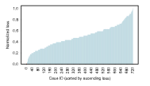
print("The minimum loss function:", loss_value)
print("The minimum loss function (normalized):", norm_value)
print("The permutation corresponding to the minimum loss function (column index selected for each row, counting starting from 0):", perm_choice)
The minimum loss function: 1205.0
The minimum loss function (normalized): 0.0
The permutation corresponding to the minimum loss function (column index selected for each row, counting starting from 0): (0, 1, 2, 3, 4, 5)
Downstream Analysis¶
We focus on the smaller, targeted subset comprising 34 regulatory genes and 41 target genes to gain deeper insights into how key regulatory factors orchestrate cell fate decisions.
Revealing the Structural Dynamics of GRNs¶
regulatory_gene_dict = get_regulators('nhr-25', 'Ea-', saved_dir, regulator_names)
{'ceh-16': 0.3416499361653389, 'ceh-32': 0.5666916385389806, 'nhr-23': -0.4925718598273363, 'nhr-2': 0.24816905174646298, 'ceh-27': 0.1109726233953044, 'mab-5': -0.5323998868840484, 'nob-1': 0.23886076979862184, 'ceh-36': 0.5233501635329588, 'lin-1': 0.2897392528846144, 'eor-1': -0.4594620129243684, 'elt-2': 0.2976629236568841, 'irx-1': -0.13928695618132647, 'pal-1': 0.2489742931460235, 'nhr-79': -0.254491892554381, 'nhr-67': -0.27121213967865765, 'pha-4': 0.27487150765088963, 'nhr-25': 0.30274213501027825, 'dpl-1': 0.18021229240405684, 'hlh-16': 0.16969014424893344, 'elt-1': 0.36983762199901216, 'die-1': -0.8442123287166449, 'mnm-2': 0.7498769338962882, 'ref-2': 0.3727797808889699, 'lsy-27': -0.1369907430615935, 'B0310.2': -0.6490667615035224, 'dmd-4': -0.6883133898208357, 'end-1': 0.33351354696441643, 'end-3': -0.3033015231479436, 'tbx-37': 0.13312002995799968, 'hlh-1': 0.20481617473191782, 'ref-1': 0.3388880575957087, 'egl-5': -0.32889328111019744, 'elt-7': 0.2227128886808342, 'hlh-26': 0.19039319833013132}
target_gene_dict = get_target_genes('elt-7', 'Ea-', saved_dir, regulator_names)
{'ama-1': 0.12514667502715765, 'B0310.2': -0.5690056949430876, 'B0336.3': -0.20087389262169697, 'ceh-16': 0.20728454926555562, 'ceh-27': -0.37076693848880266, 'ceh-43': 0.14481679327711647, 'die-1': 0.3327874528028564, 'dpl-1': 0.9878740137951658, 'dpy-31': 0.12992381853423898, 'dpy-7': 0.32438275516616405, 'dve-1': -0.28369422531295474, 'eef-1A.1': 0.13208107870118843, 'elt-1': 0.1485771897337543, 'elt-6': -0.3187646539838563, 'elt-7': -0.1953150517426333, 'F16B12.6': 0.13044802075213238, 'his-72': -0.1813583591231202, 'hlh-1': 0.2157784109364843, 'hmg-1.2': -0.13887148392408816, 'hmg-11': 0.09813520413087781, 'hsp-3': 0.24737695149461586, 'irx-1': -0.2025020427447795, 'isw-1': 0.05843540247802143, 'lin-1': 0.3000627454486636, 'lin-11': -0.034702965083833526, 'lin-13': 0.07181059724759799, 'lin-26': 0.14910339699633657, 'lin-39': 0.047706651933201984, 'lir-2': -0.006536041410562453, 'mab-5': -0.05103641530899973, 'mep-1': 0.2284986996612302, 'mml-1': -0.13379086742843393, 'nhr-23': 0.2373577819074984, 'nhr-25': 0.2227128886808342, 'nhr-49': 0.0037408606991700503, 'nhr-57': 0.13837017790147818, 'nhr-68': -0.3052208724250098, 'nob-1': 0.10537876339917188, 'pbrm-1': 0.22186185639658834, 'sma-9': 0.1577509253281303, 'tps-2': 0.17392960836027058}
Visualization Examples
Visualization of the Changes in the Number of Negative Regulations
Plot the negative regulatory interactions for each target gene along the fate map.
plot_target_genes_along_fatemap(target_gene_names, regulator_names, 'negative', saved_dir, path, 0.1, output_path)
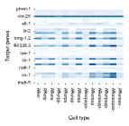
Visualization of the Changes in the Number of Positive Regulations
Plot the positive regulatory interactions for each target gene along the fate map.
plot_target_genes_along_fatemap(target_gene_names, regulator_names, 'positive', saved_dir, path, 0.1, output_path)
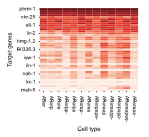
Visualization of the Changes in the Total Number of Regulations
Plot the total number of regulatory interactions for each target gene along the fate map.
plot_target_genes_along_fatemap(target_gene_names, regulator_names, 'total', saved_dir, path, 0.1, output_path)
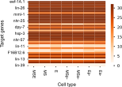
Visualization of the Dynamic Regulatory Networks for ‘elt-7’
Plot the dynamic regulatory network of the regulatory gene ‘elt-7’ along the fate map.
plot_regulatory_network_along_fatemap('elt-7', dynamic_networks_dict, path, output_path, 0.1, figsize=(16,2))
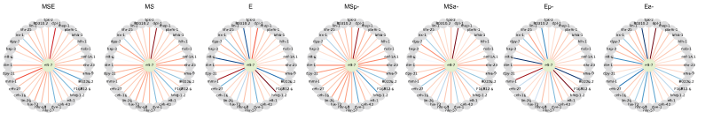
Visualization of Regulatory Strength on the Fate Map Path
Plot the changes in regulatory strength of each regulatory gene on the fate map path (with ‘Ea-’ as the leaf node) for the target gene ‘nhr-25’.
path = fate_map.get_path("Ea-")
plot_regulatory_strength_along_fatemap(saved_dir, path, regulator_names, 'nhr-25', output_path)
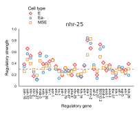
Visualization of Regulator Activity Across Lineages
Plot the comparison of the activity of the regulatory gene ‘nhr-25’ at different nodes of different fate maps.
map_df = pd.read_csv('examples/data/C.elegans/C.elegans_Core/additional_input_data/fate_map_topology.csv')
edges_dict_Celegans = {}
for top_key, group in map_df.groupby("Lineage"):
sub_dict = {f"{row['Parent']}->{row['Child']}": row['Length'] for _, row in group.iterrows()}
edges_dict_Celegans[top_key] = sub_dict
input_path = os.path.dirname(saved_dir)
plot_regulator_activity_across_lineages(edges_dict_Celegans, input_path, 'nhr-25', regulator_names, 0.35, output_path)
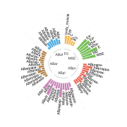
Identifying Key Genes Driving Differentiation¶
key_regulators_df_concat = pd.DataFrame()
for lineage in edges_dict_Celegans.keys():
edges = parse_edge_dict(edges_dict_Celegans[lineage])
fatemap = FateMap(edges, high_expression_genes[lineage])
nodes = fatemap.node_internals[::-1] + [fatemap.node_root]
for node in nodes:
input_path = os.path.join(os.path.dirname(saved_dir), lineage)
key_regulators = identify_key_genes_differentiation(input_path, fatemap, 0.05, regulator_names, target_gene_names, node)
high_expression_genes_of_ancestor_node = list(
set(key_regulators.loc[((key_regulators['DRS'] > 0.2) & (key_regulators['DRC'] > 0.7)), 'regulator_id']) & set(target_gene_names)
)
high_expression_genes[lineage][node] = high_expression_genes_of_ancestor_node
fatemap = FateMap(edges, high_expression_genes[lineage])
key_regulators_df_concat = pd.concat([key_regulators_df_concat, key_regulators])
regulator_id positive_regulatory_strength positive_regulation_number negative_regulation_number DRS DRC node_id
ceh-16 3.571054 9.0 0.0 0.396784 1.0 E
ceh-36 3.414377 9.0 0.0 0.379375 1.0 E
nhr-2 3.340567 8.0 0.0 0.417571 1.0 E
elt-7 3.424669 7.0 0.0 0.489238 1.0 E
nhr-79 2.417552 6.0 0.0 0.402925 1.0 E
... ... ... ... ... ... ...
nhr-67 0.034049 4.0 4.0 0.008512 0.5 P2
Visualization of Key Gene Differentiation
nodes = list(key_regulators_df_concat['node_id'].drop_duplicates())
plot_key_genes_differentiation(key_regulators_df_concat, nodes, regulator_names, output_path, figsize=(5,2.5))
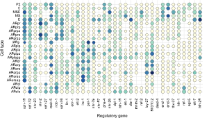
Identifying Key Regulatory Genes Driving Cell Fate Bias¶
!!! tip To identify key genes driving cell fate divergence, it is essential to determine the difference in highly expressed target genes between sibling cell types. Therefore, we utilize the larger dataset, which includes 244 regulatory genes and 339 target genes, for key gene identification. However, during the result analysis, we remain focused on a subset of 39 regulatory genes to ensure a more targeted and interpretable analysis.
This step identifies the high expression target genes in each leaf node of the cell fate map (sampled cell types).
groups = {
'ABar': {
'names': ['ABarpp-', 'ABarap-', 'ABarpapp-', 'ABarpapa-', 'ABaraaa-', 'ABaraapp-', 'ABaraapaa-'],
'extra_keys': ['ABarp', 'ABarpa', 'ABara', 'ABaraa', 'ABaraap', 'ABar']
},
'ABpr': {
'names': ['ABprppa-', 'ABprpap-', 'ABprpaa-', 'ABpraa-', 'ABprappa-', 'ABprapa-'],
'extra_keys': ['ABprp', 'ABprpa', 'ABprapp', 'ABpra', 'ABpr', 'ABprap']
},
'ABpl': {
'names': ['ABplpppp-', 'ABplpap-', 'ABplpaa-', 'ABplapap-', 'ABplappp-', 'ABplappa-'],
'extra_keys': ['ABplp', 'ABplpa', 'ABpla', 'ABplapp', 'ABpl']
},
'ABal': {
'names': ['ABalpp-', 'ABalpa-', 'ABalap-', 'ABalaa-'],
'extra_keys': ['ABalp', 'ABala', 'ABal']
}
}
base_path = 'examples/data/C.elegans/C.elegans_Full/additional_input_data'
gene_expression_matrices = {}
high_expression_genes = {}
for group, info in groups.items():
group_dict = {}
for name in info['names']:
file_path = f'{base_path}/{name}_count_matrix.csv'
df = pd.read_csv(file_path, index_col=0)
gene_expression_matrices[name] = df
genes_var_name = name
group_dict[genes_var_name] = [i for i in get_high_expression_genes(df) if i in target_genes_name]
for key in info['extra_keys']:
group_dict[key] = None
high_expression_genes[group] = group_dict
Display partial key regulatory gene inference results.
regulatory_gene_filter = list(pd.read_csv('examples/data/C.elegans/C.elegans_Core/additional_input_data/regulatory_genes_name.csv', index_col=0).iloc[:,0])
Take lineage ABpr as an example.
edges = parse_edge_dict(edges_dict_Celegans['ABpr'])
fate_map = FateMap(edges, high_expression_genes['ABpr'])
input_path = 'examples/results/C.elegans/C.elegans_Full/ABpr'
grn_dict_ABpr = get_dynamic_networks(input_path, fate_map, 0.1, regulatory_genes_name, target_genes_name)
ancestor_node_id = 'ABprpa'
child_nodes = [fate_map.nodes[ancestor_node_id].directed_edges[i].end for i in range(2)]
print(child_nodes)
high_expression_target_genes_in_child_1 = fate_map.nodes[child_nodes[0]].high_expression_genes_in_leaf
high_expression_target_genes_in_child_2 = fate_map.nodes[child_nodes[1]].high_expression_genes_in_leaf
Tar_1 = list(set(target_genes_name) & set(high_expression_target_genes_in_child_1) - set(high_expression_target_genes_in_child_2))
Tar_2 = list(set(target_genes_name) & set(high_expression_target_genes_in_child_2) - set(high_expression_target_genes_in_child_1))
key_regulators_df_ABprpa = find_fate_bias_genes(grn_dict_ABpr, 'ABprpa', Tar_1, Tar_2, regulatory_genes_name)
df = merge_key_regulators(key_regulators_df_ABprpa, child_nodes)
df_filter = filter_regulatory_genes(df, regulatory_gene_filter)
Regulatory gene FBI_ABprpap- FBP_ABprpap- FBI_ABprpaa- FBP_ABprpaa-
5 pal-1 0.472304 0.000000 0.527696 0.600000
6 irx-1 0.466638 0.000000 0.533362 0.600000
9 eor-1 0.457475 0.000000 0.542525 0.600000
22 nhr-25 0.456371 0.000000 0.543629 0.500000
23 dpl-1 0.468601 0.000000 0.531399 0.600000
... ...
Visualization
plot_key_genes_fate_bias(df_filter, child_nodes, output_path, figsize=(1.65,2.8))
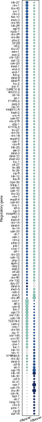
Identifying Constitutive and Specific Regulatory Interactions¶
This step outputs the clustering results of each regulatory relationship using fuzzy C-means clustering. The outputs include:
X: A DataFrame where each row represents a regulatory relationship, each column represents a node in the fate map, and each element is either 0 (no interaction) or 1 (interaction exists).centers: The centers of the edge clusters.weight_matrix: The membership matrix for each regulatory relationship in each edge cluster.
X, centers, weight_matrix = cluster_regulatory_interactions(saved_dir, fate_map, 0.3, regulator_names, target_gene_names, len(regulator_names), len(target_gene_names), 5, 2)
( EMS MS E MSp- MSa- Ep- Ea-
0 1 1 1 1 1 1 1
1 1 1 1 1 1 1 1
2 1 1 1 1 1 1 1
3 1 1 1 1 1 1 1
4 1 1 1 1 1 1 0
... ... .. .. ... ... ... ...
1389 1 1 1 1 1 1 1
1390 0 0 0 0 0 0 0
1391 0 0 0 0 0 0 0
1392 0 0 0 0 0 0 0
1393 1 1 1 1 1 1 1
[1394 rows x 7 columns],
0 1 2 3 4 5 6
0 0.046258 0.032178 0.117197 0.039124 0.050451 0.043458 0.947314
1 0.188813 0.045104 0.963920 0.054591 0.113503 0.880305 0.834711
2 0.990004 0.983410 0.980623 0.963207 0.947537 0.936966 0.961219
3 0.933149 0.971438 0.075477 0.961343 0.821624 0.095924 0.134773
4 0.007278 0.008996 0.011875 0.014350 0.015490 0.014834 0.008857,
EdgeCluster_1 EdgeCluster_2 EdgeCluster_3 EdgeCluster_4 EdgeCluster_5
ceh-16->eef-1A.1 0.001904 0.003105 0.989338 0.004157
ceh-16->nhr-23 0.001904 0.003105 0.989338 0.004157
ceh-16->elt-1 0.001904 0.003105 0.989338 0.004157
ceh-16->hlh-1 0.001904 0.003105 0.989338 0.004157
...
hlh-26->dpl-1 0.998029
hlh-26->mab-5 0.998029
hlh-26->lin-39 0.001495
[1394 rows x 5 columns]
This step outputs the proportion of regulatory interactions in each edge cluster for specific cell types.
identify_regulatory_interactions_specificity = map_edge_clusters_to_nodes(
saved_dir, fate_map, 0.1, regulator_names, target_gene_names, 5, 0.3, X, len(regulator_names), len(target_gene_names), weight_matrix
)
EdgeCluster_1 EdgeCluster_2 EdgeCluster_3 EdgeCluster_4 EdgeCluster_5
EMS 0.000000 0.208333 1.000000 0.949686 0.000000
MS 0.000000 0.000000 1.000000 1.000000 0.000000
E 0.000000 1.000000 1.000000 0.000000 0.000000
MSp- 0.008929 0.023810 0.936877 0.981132 0.029046
MSa- 0.071429 0.148810 0.906977 0.792453 0.053942
Ep- 0.000000 1.000000 0.860465 0.113208 0.000000
Ea- 1.000000 0.744048 0.930233 0.163522 0.000000
Visualization
plot_regulatory_interactions_clustering(weight_matrix, output_path)
plot_regulatory_interactions_in_celltypes(edges_cluster_to_nodes, output_path)